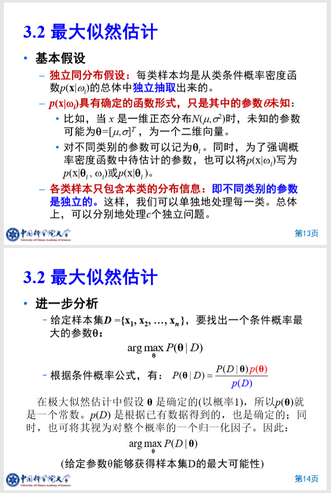
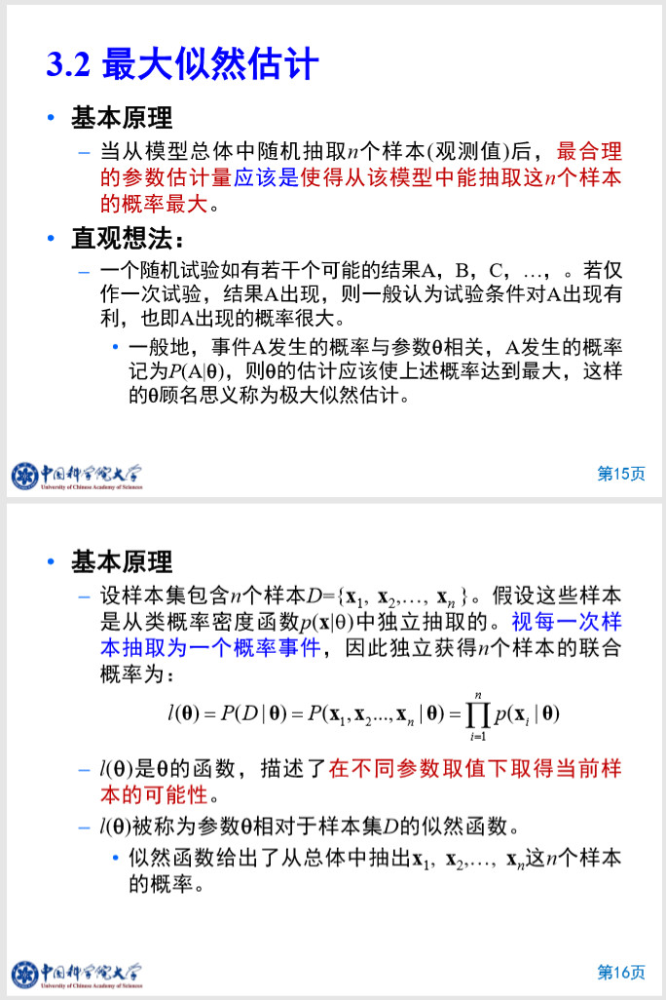
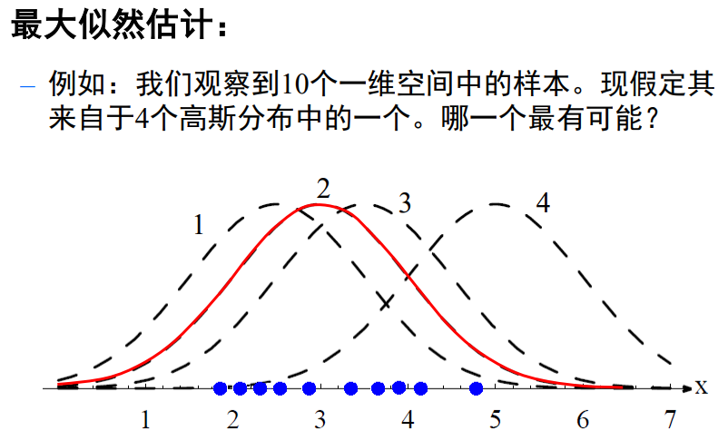
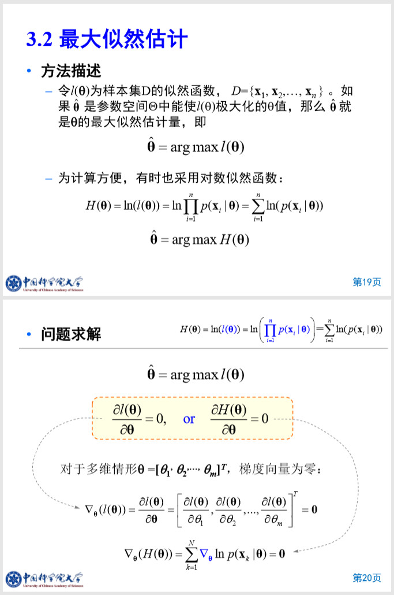
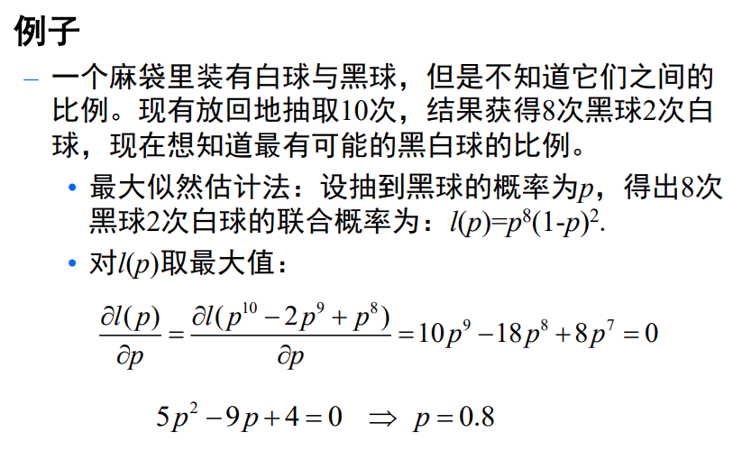
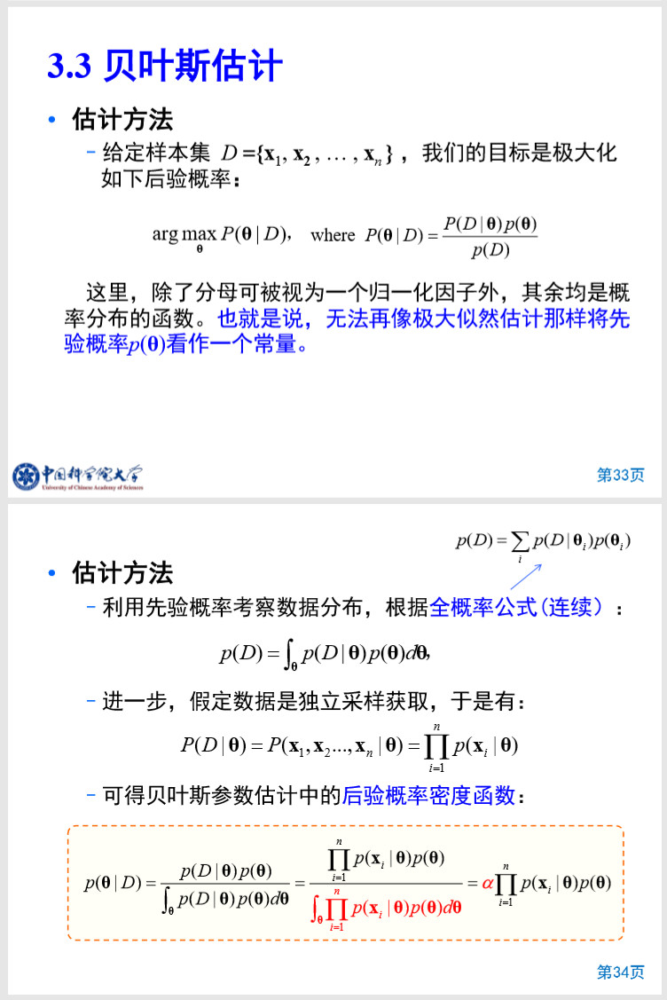
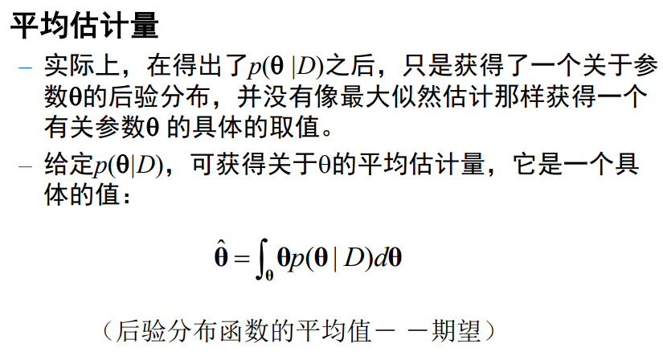
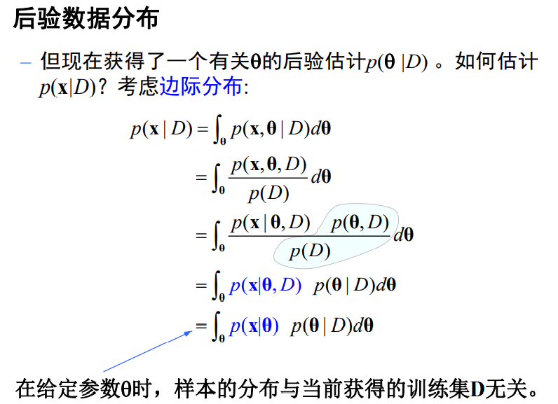
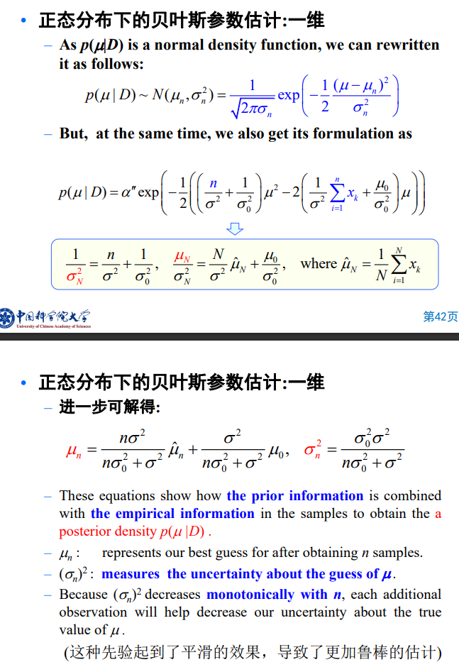
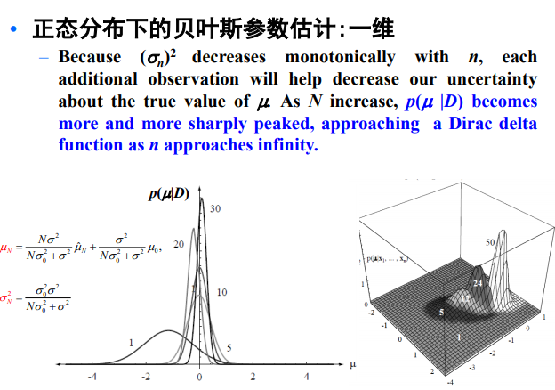

# 概率密度函数估计
# 基本概念
# 参数估计
给定分类器结构/函数形式，从训练样本估计参数
- 最大似然法（Maximum likelihood）：假设参数为固定值，最优估计；似然度最大
- 贝叶斯估计（Bayesian estimation）：假设参数为随机变量，估计其分布
- 贝叶斯学习（Bayesian Learning）
# 贝叶斯分类器
- 已知先验概率 和类概率密度函数 ，按某决策规则确定判别函数和决策面。
- 但是，在实际应用中，类条件概率密度函数往往是未知的。同时，能够收集到的样本是有限的，先验概率也可能是未知的。
- 因此，需要换一种处理问题的方式：“直接从样本出发来设计分类器”。按照贝叶斯分类器设计方法，有两方面的工作：
- 利用样本估计先验概率和类条件概率密度函数；
- 应用贝叶斯决策规则，设计分类器。
# 三个主要任务
- 如何利用样本来估计先验概率和类概率密度函数
- 估计的性质如何
- 基于样本进行的估计的错误率
# 方法分类
监督参数估计
样本所属的类别及类条件概率密度函数的形式为已知，而表征概率密度函数的某些参数是未知的。
例如，只知道样本所属总体为正态分布，而正态分布的参数未知。
目标：由已知类别的样本集对所属总体的分布的参数进行统计推断。
上式中，类条件概率密度函数（后验概率函数）已知，但是参数未知，监督参数估计即要估计这些未知的参数
非监督参数估计
已知总体概率密度函数的形式，但样本所属类别未知，要求推断出概率密度函数的某些参数。
（EM算法）
非参数估计
已知样本所属类别，但样本所属总体的 概率密度函数的形式未知，要求直接推断出概率密度函数本身。
# 统计学基本概念
# 随机采样
按照随机的原则，即保证样本总体中每一个对象都有已知的、非零的概率被选入作为研究的对象， 保证样本的代表性。
- 按照样本采样可分有放回采样和无放回地采样
- 抽样方法：随机采样包括简单随机抽样、系统抽样（等距抽样）、分层抽样（类型抽样）、整群抽样等
- 概率抽样应满足要求：
- 随机性：总体中的所有个体都有同样被抽出的机会。
- 可行性：抽样的方法在实际中是可实施的。
- 信息性：抽得的样本尽可能反映出分析时所期望的各种信息。
# 统计量
样本中包含总体的信息，我们希望通过样本 集将有关信息抽取出来，即根据不同要求构造出有关 样本的某种函数，这种函数在统计学中称为统计量
例如均值
# 参数空间
在参数估计中，假定总体概率密度函数的形式已知，但其参数未知。将未知参数记为，参数 的全部允许取值集合构成参数空间，记为。
# 点估计
点估计问题就是构造一个统计量作为参数的估计 。
# 估计量
在统计学中称为的估计量。
# 估计值
如果为属于第类的个样本，带入统计量计算公式，即可得到的具体的值，这个竖直在统计学上称为参数的估计值。
例如均值估计值
# 区间估计
与点估计不同，区间估计要求采用作 为参数可能取值范围的一种估计。这个区间称为置信 区间。这类估计问题称为区间估计。
# 最大似然估计
# 基本假设
# 基本原理
可见，2这个高斯分布，是最有可能的
# 方法描述与问题解决
流程：
根据最大似然估计基本假设和原理，可知其估计的参数可以表达为个样本的联合概率
那么最大似然估计的参数估计量，即为：
为计算方便，有时也采用对数似然函数：
- 对于极值问，可以通过求导数，让导数等于0，直接得到估计结果
核心：概率连乘的函数L(θ)取最大值，即最大似然概率，得到所估计的参数
# 案例
# 高斯分布下的最大似然估计【困难：涉及公式推导】
# 频率派和贝叶斯派
频率派
认为待估参数θ是客观存在的，因此可将其视为一个固定的未知常数；同时，假定样本D是随机的。 因此，频率派重点研究样本空间，其中的概率计算均针对样本D的分布。
贝叶斯派
具有截然相反的观点，他们认为参数是随机变量，而样本D是固定的。由于样本是固定的，因此重点研究待估参数的分布。
# 贝叶斯估计
# 贝叶斯估计与最大似然估计原理区别

# 基本任务
# 估计方法
利用样本D，来得到关于参数θ的概率密度分布
# 平均估计量与后验数据分布
平均估计量
在给定样本D时，得到θ概率密度函数，估计一个具体的θ。
简单来说，可通过θ的后验概率密度函数，得到关于θ的平均估计量，它是一个具体的值。
后验数据分布
根据平均估计量，我们可以得到观测样本的概率密度函数分布。
利用得到具体，获得观测样本概率密度函数
例如，假定观测样本服从正态分布，给定观测样本可以根据平均估计量得到具体的和的取值，代入正态分布公式，可得到关于样本的密度分布函数。
但是，我们的最终目的是根据中有限样本 来估计概率密度函数本身。解决办法如下：
- 结合观测样本概率密度函数和参数概率密度函数，遍历整个θ，即考虑所有可能参数取值下的样本概率密度的加权平均。得到整体样本概率密度函数。
# 贝叶斯估计与最大似然估计过程区别
最大似然估计
采用最大似然估计，根据观测样本，可得到一个关于的固定值，根据其原理假设，直接代入就得到了
贝叶斯估计
采用贝叶斯估计，根据观测样本，先得到参数的概率密度函数，估计出一个参数，代入公式再得到观测样本概率密度函数，再考虑边际分布，积分得到整体样本概率密度函数
左边为最大似然估计过程，右边是贝叶斯估计过程。
# 案例
- 正态分布下的贝叶斯参数估计
- 根据观测样本集，利用贝叶斯公式，求得参数概率密度函数

基于贝叶斯估计下，参数概率密度函数一些特性：
参数和，与观测样本有相关性，即融合先验知识。这种先验起到平滑的效果，导致了更加鲁棒性的估计。
由于融合先验知识，若样本足够多，那么就对参数实际情况更加了解。

- 根据由边际分布，所推导的公式，求后验数据分布。